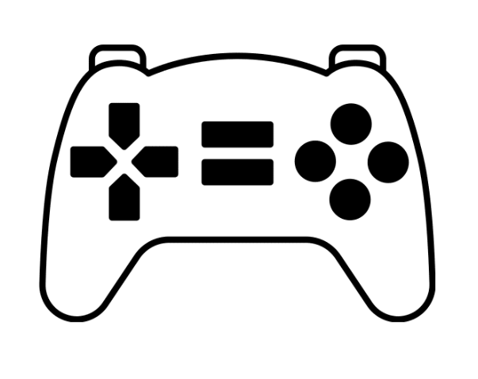

10 Melhores Lançamentos de Jogos 2023
Baldur's Gate 3
Baldur's Gate III é um jogo eletrônico de RPG desenvolvido e publicado pela Larian Studios. É o terceiro jogo principal da série Baldur's Gate, que é baseada no sistema de RPG de mesa Dungeons & Dragons, dentro do cenário de Forgotten Realms
- Data de lançamento: já disponível
- Plataformas:PlayStation 5, Xbox Series X e Series S, PC
The Legends of the zelda:Tears of Kingdom
O jogo é um mergulho em queda livre no conceito de liberdade e na clássica lenda da franquia, expandindo a essência de seu antecessor.
- Data de lançamento: já disponível
- Plataformas: Nintendo Switch
Resident Evil 4 (Remake)
O jogo é uma recriação fiel ao original, apresentando gráficos e jogabilidade atualizados para deixar a experiência mais moderna, mas sem perder a essência.
- Data de lançamento: já disponível
- Plataformas: PlayStation 4, PlayStation 5, Xbox Series X|S, PC
Diablo IV
Com uma jogabilidade diabolicamente viciante, o jogo apresenta um mundo gigantesco e repleto de histórias sombrias e cativantes, árvore de habilidades robusta e muito conteúdo endgame.
- Data de lançamento: já disponível
- Plataformas: PlayStation 4, PlayStation 5, Xbox One, Xbox Series X|S, PC
Street Fighter 6
O game arrancou elogios da crítica especializada e dos fãs pelos modos variados de jogo, estética colorida, exploração livre em terceira pessoa, recursos de acessibilidade e jogabilidade viciante.

- Data de lançamento: já disponível
- Plataformas: PlayStation 4, PlayStation 5, Xbox Series X|S, PC
Hogwarts Legacy
É um RPG que se passa no universo de Harry Potter (antes dos livros) e coloca o jogador como um estudante de Hogwarts, contando com aulas de magia, embates entre as Casas e lutas com varinha.
- Data de lançamento: já disponível
- Plataformas: PlayStation 4, PlayStation 5, Xbox One, Xbox Series X|S, PC
Final Fantasy XVI
O 16º jogo da linha numerada de Final Fantasy é um RPG de ação com uma história trágica, combate com muitas possibilidades e um mundo repleto de magia. A recepção, em sua maior parte, foi positiva, tanto pela crítica especializada quanto pelos fãs.
- Data de lançamento: já disponível
- Plataformas: PlayStation 5
Mortal Kombat 1
Parece que 2023 é um bom ano para ser fã de jogos de luta. Mortal Kombat 1 promete um “universo renascido” para a franquia e tem, como principal novidade, o sistema de “Kameo Fighters”, que consiste na ideia de fazer combos com um segundo lutador parcialmente controlável.
- Data de lançamento: 19 de setembro
- Plataformas: PC, PlayStation 5, Xbox Series X|S e Nintendo Switch
Lies Of P
Lies of P é um RPG de ação ao estilo soulslike, que se inspira no clássico Pinóquio, mas apresenta estética gótica da Era Vitoriana, jogabilidade desafiadora e muitas lutas contra chefões.
- Data de lançamento: 19 de setembro
- Plataformas: PlayStation 4, PlayStation 5, Xbox One, Xbox Series X|S, PC
Assassin's Creed Mirage
Assassin’s Creed retorna em 2023 com Mirage, novo jogo da linha principal da franquia, que manterá os moldes de RPG de Odyssey e Valhalla. O game será ambientado em Bagdá e terá Basim como protagonista.
- Data de lançamento: 12 de outubro
- Plataformas: PlayStation 4, PlayStation 5, Xbox One, Xbox Series X|S, PC